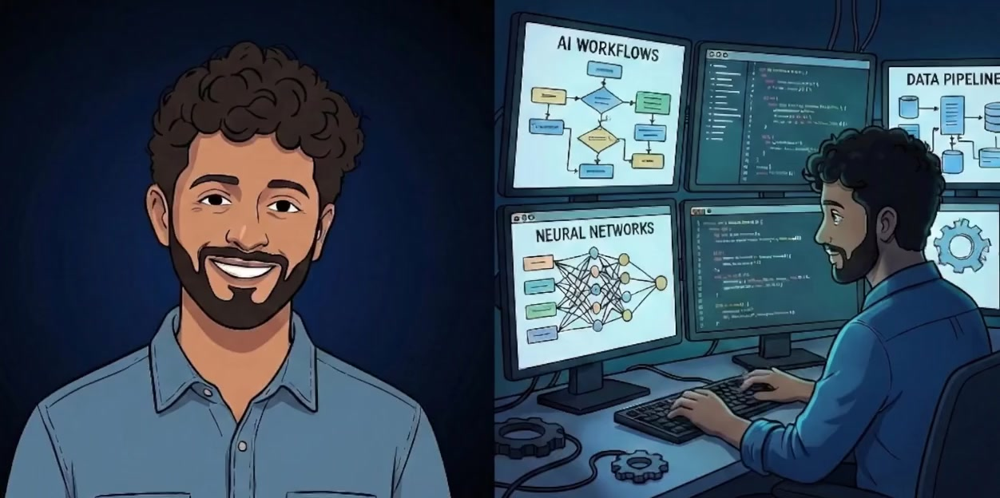

The gap between what AI can do and what businesses are actually using it for is massive. I close that gap.
I'm Josh, an AI implementation specialist with hands-on experience at the enterprise level in healthcare data and operations. I build and use AI as core infrastructure for how I work.
My personal AI stack saves me 10+ hours a week across reporting, project management, workflow automations, and day-to-day operations. Large 3-week long projects now take only a few hours to complete.
I don't believe in AI hype. I believe in measured, tested capabilities. Right now, the gap between what AI can do and what most businesses think it can do is the widest it's ever been. I close that gap — build what works into your operations today, and set up the foundation so your business compounds the gains as the tools get more powerful.

Why now? AI capabilities are doubling roughly every four months. The systems I build today will be running on significantly more powerful models by the end of the year — at no extra cost to you. Starting now means you're building on a curve that works in your favor.
I audit your workflows and pinpoint where manual processes are eating hours every week: data entry, reporting, scheduling, follow-ups, document handling.
I design and implement AI-powered automations tailored to your business. Not off-the-shelf tools, but systems built around how your team actually works.
I train your team to use what I build — and more importantly, I set up your operations so that as AI gets more capable every few months, your business captures that value automatically. You're not just getting today's automation. You're getting a system that gets better over time.
This entire website: strategy, copy, design, code, and a live AI demo. The traditional route? 2 to 4 weeks and $5,000 to $10,000 across copywriters, designers, and developers.
Custom reporting workflow built from scratch, automated end to end
Repetitive work eliminated with a custom multi-model AI system
Describe your most annoying, repetitive, time-sucking task. My custom AI will analyze it right now and tell you exactly how we can automate it.
Book a free discovery call to further assess where you're leaving time on the table.
Book a Discovery Call →